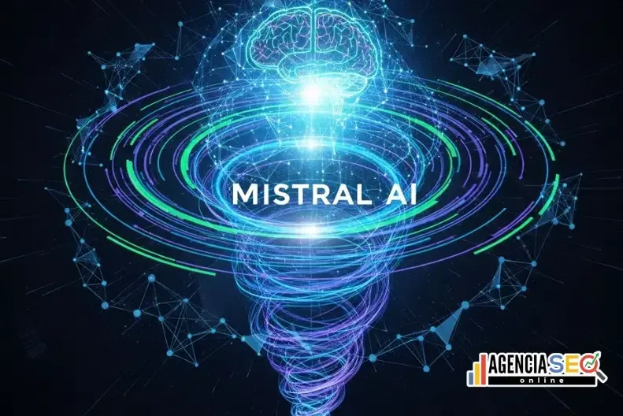

Mistral AI desarrolla modelos de inteligencia artificial eficientes para lenguaje, razonamiento, generación de contenido y aplicaciones empresariales.
Ir a Mistral OficialDesarrollador
Modelos eficientes
Lenguaje y contenido

Genera contenido escrito, explicaciones, ideas y respuestas estructuradas.
Se enfoca en modelos rápidos, prácticos y útiles para diferentes tareas.
Ayuda a analizar información y resolver problemas con respuestas claras.
Puede integrarse en proyectos, herramientas digitales y entornos profesionales.